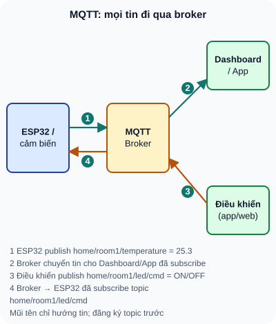

WiFi & IoT — ESP32 Web Server
ESP32 kết nối WiFi, tạo web server điều khiển GPIO từ điện thoại và đẩy dữ liệu cảm biến lên dashboard online.
- Kết nối ESP32 vào mạng WiFi — Station Mode (client)
- Tạo web server đơn giản — điều khiển LED từ trình duyệt
- Gửi dữ liệu JSON qua HTTP API — cảm biến → web app
- Kết nối MQTT broker (HiveMQ, Mosquitto) — publish/subscribe
- Dùng WiFiManager — tránh hardcode SSID/password trong code
- Deep Sleep + WiFi reconnect — tiết kiệm pin cho IoT battery
- Hiểu OTA (Over-The-Air) update — cập nhật firmware không cần dây
1. Kết nối WiFi — Station Mode
// ESP32 WiFi Station Mode cơ bản
#include <WiFi.h>
const char* ssid = "TEN_WIFI";
const char* password = "MAT_KHAU";
void setup() {
Serial.begin(115200);
WiFi.begin(ssid, password);
Serial.print("Dang ket noi WiFi");
while (WiFi.status() != WL_CONNECTED) {
delay(500);
Serial.print(".");
}
Serial.println("\nDa ket noi!");
Serial.print("IP Address: ");
Serial.println(WiFi.localIP()); // Ví dụ: 192.168.1.105
}
2. Web Server — Điều khiển LED từ trình duyệt
// ESP32 Web Server — điều khiển LED + đọc DHT22
#include <WiFi.h>
#include <WebServer.h>
#include <DHT.h>
WebServer server(80);
DHT dht(4, DHT22);
const int LED_PIN = 2;
bool ledState = false;
void handleRoot() {
String html = R"(
<html><body style='font-family:sans-serif;text-align:center'>
<h1>ESP32 IoT Control</h1>
<p>Nhiet do: )" + String(dht.readTemperature(),1) + R"( °C</p>
<a href='/led/on'><button>LED ON</button></a>
<a href='/led/off'><button>LED OFF</button></a>
</body></html>
)";
server.send(200, "text/html", html);
}
void handleLedOn() { digitalWrite(LED_PIN, HIGH); ledState=true; server.sendHeader("Location","/"); server.send(302); }
void handleLedOff() { digitalWrite(LED_PIN, LOW); ledState=false; server.sendHeader("Location","/"); server.send(302); }
// Thêm JSON API cho app mobile
void handleApi() {
String json = "{\"temp\":" + String(dht.readTemperature(),2) +
",\"humi\":" + String(dht.readHumidity(),2) +
",\"led\":" + String(ledState ? "true" : "false") + "}";
server.send(200, "application/json", json);
}
void setup() {
pinMode(LED_PIN, OUTPUT); dht.begin();
WiFi.begin("SSID", "PASS");
while (WiFi.status() != WL_CONNECTED) delay(500);
server.on("/", handleRoot);
server.on("/led/on", handleLedOn);
server.on("/led/off", handleLedOff);
server.on("/api", handleApi); // Mobile app endpoint
server.begin();
Serial.println("Server: http://" + WiFi.localIP().toString());
}
void loop() { server.handleClient(); }
3. MQTT — Giao tiếp IoT thời gian thực
MQTT (Message Queuing Telemetry Transport) là giao thức nhẹ, phù hợp IoT — thiết bị publish dữ liệu lên topic, và bất kỳ ai subscribe topic đó đều nhận được ngay lập tức.

Đọc mô tả D37-1
ESP32 publish nhiệt độ lên topic home/room1/temperature tới broker; broker chuyển tin cho Dashboard/App đã subscribe. Thiết bị điều khiển publish lệnh lên home/room1/led/cmd; broker chuyển tin cho ESP32 đã subscribe topic đó.
1: Thêm vào setup(): server.on("/api/v2", []() { String json = "{\"temperature\":" + String(dht.readTemperature(),2) + ",\"humidity\":" + String(dht.readHumidity(),2) + ",\"uptime\":" + String(millis()) + ",\"ip\":\"" + WiFi.localIP().toString() + "\"}"; server.send(200,"application/json",json); });
2: Hardcode: (a) Code bị lộ khi share/đăng GitHub; (b) Không thể thay WiFi mà không nạp lại firmware. Giải pháp: WiFiManager library — ESP32 tạo AP "Setup", người dùng kết nối và nhập SSID/password qua web form, lưu vào EEPROM/SPIFFS. Hoặc lưu vào SPIFFS file credentials.json.
3: Chu kỳ 5 phút = 300 giây. Mỗi chu kỳ: I_active×t = 150mA × 2s = 300mAs. I_sleep×t = 0,01mA × 298s = 2,98mAs. I_avg = (300+2,98)/300 = 1,01mAs. Thời gian sống = 2000mAh / 1,01mA = 1980 giờ ≈ 82 ngày ≈ gần 3 tháng từ 1 lần sạc!